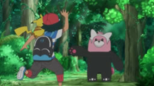
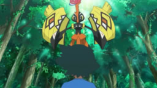
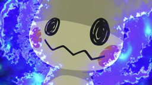
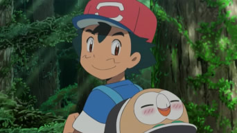
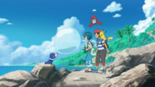
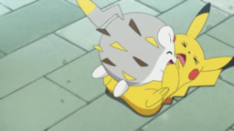
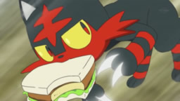

Esta es una lista de episodios de la primera temporada de Pokémon y primer parte de La Serie Pokémon: El Comienzo, que se transmitió en Japón bajo el título de Pokémon: Pocket Monsters, mientras que el nombre en occidente fue "Pokémon: ¡Atrápalos ya!" en Hispanoamérica, "Pokémon: ¡Hazte con todos!".

¡Alola a nuevas aventuras!
Durante sus vacaciones en Alola, Ash, Pikachu y la madre de Ash encuentran un nuevo Pokémon. El profesor Oak envía un huevo Pokémon a la Escuela Pokémon.

¡El recorrido del espíritu!
Ash y Pikachu empiezan el curso en la Escuela Pokémon con el profesor Kukui y sus nuevos compañeros de clase, que están impresionados con la pulsera Z de Ash.

¡Cargando la Dex…!
El Team Rocket llega a Alola. El profesor Kukui le entrega a Ash una Pokédex que puede hablar e interactuar con los humanos. Ash se dirige a atrapar un Pokémon salvaje.

¡Primera captura en Alola, al estilo Ketchum!
Ash y Pikachu no logran capturar un Pokémon de Alola y acaban visitando el Centro Pokémon. El Team Rocket conoce a Mimikyu y a un Bewear.

¡Tres hurras para Popplio!
La clase se va de excursión al mar para estudiar a los Pokémon marinos. Popplio practica soplando globos de agua. El Team Rocket se dirige también a la playa.

¡Una compra de comida muy movidita!
Hoy Ash y sus amigos Pokémon se quedan solos en casa y lidiarán con las tareas domésticas, como lavar, cocinar e ir de compras.

¡Por eso Litten es un ladronzuelo!
Ash conoce a un salvaje Litten de camino a la escuela. Aprovechándose de su bondad, el Litten le roba el sándwich y huye. Ash decide atraparlo.
¡El emocionante desafío del Huevo de Lylia!
La clase tiene como tarea cuidar de un huevo Pokémon. Lylia está de acuerdo en que todos juntos críen el huevo para superar el miedo a tocar a los Pokémon.
¡Superar a un dominante!
Kaudan, el kahuna de la isla Melemele, encarga a Ash su primera tarea en una isla: acabar con una plaga de Raticate y Rattata pacíficamente.
¡Prueba y decepción!
Ash se prepara para su primera prueba en la isla. En ella debe vencer a Kaudan, habilidoso luchador Pokémon que tiene su propio movimiento Z.